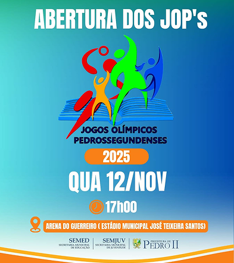

Os Jogos Olímpicos Pedrossegundenses (JOPs) são a maior celebração esportiva de Pedro II, reunindo estudantes de todas as
redes de ensino em uma competição marcada por integração, talento e espírito esportivo. Na edição mais recente, realizada de 12 a 21 de novembro, mais de mil estudantes-atletas participaram de modalidades como futsal,
handebol, atletismo, corrida de rua, capoeira, karatê, xadrez e provas paralímpicas, reforçando o compromisso do município
com a inclusão no esporte.
O evento contou com grande envolvimento da comunidade escolar e da gestão municipal, destacando-se a presença
da prefeita Betinha Brandão, que acompanhou as disputas e a entrega de medalhas e troféus. Realizados pela Prefeitura de Pedro II, por meio das Secretarias de Educação e Juventude, os JOPs celebram o potencial dos jovens e fortalecem o esporte como ferramenta de desenvolvimento e cidadania.